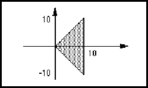

schematicOffPageConnectorImplementation ::= '('
'schematicOffPageConnectorImplementation'
implementationNameDef
schematicOffPageConnectorTemplateRef
transform
{ <associatedInterconnectNameDisplay> | <implementationNameDisplay>
| <nameInformation> | property | propertyDisplay |
propertyDisplayOverride | propertyOverride }
')'
*page
schematicImplementation schematicOffPageConnectorImplementationRef schematicOffPageConnectorTemplate schematicOnPageConnectorImplementation
SchematicOffPageConnectorImplementation references a schematicOffPageConnectorTemplate, which is used to represent an off-page connector in a schematic. It may exist in isolation, or it may be associated with a schematicNet or schematicBus. This association is achieved by reference to the schematicOffPageConnectorImplementation from schematicNetJoined or schematicBusJoined.
An off-page connector is intended to be used to represent the fact that a net or bus is continued elsewhere on the schematic on another page. There are no semantic rules governing its use, i.e. it is not illegal if the net or bus is not represented on another page.
Transform is used to position the instance of the schematicOffPageConnectorTemplate in a page.
InterconnectNameDisplay may be used to display the name of the schematicNet or schematicBus with which this schematicOffPageConnectorImplementation is associated.
(page &1 ...
(schematicOffPageConnectorImplementation I1
(schematicOffPageConnectorTemplateRef ... )
(transform (origin (pt 100 200))))
...
(schematicNet NET1 (signalRef SIG1)
(schematicInterconnectHeader ...)
(schematicNetJoined (portJoined ...)
(schematicOffPageConnectorImplementationRef
I1) ...) ...))
In this example, a schematicOffPageConnectorImplementation named I1 is referenced from the schematicNet NET1.
schematicOffPageConnectorImplementationRef ::= '('
'schematicOffPageConnectorImplementationRef'
implementationNameRef
')'
*schematicBusJoined *schematicNetJoined
page pageRef schematicImplementation schematicOffPageConnectorImplementation schematicOffPageConnectorTemplateRef schematicOnPageConnectorImplementationRef
SchematicOffPageConnectorImplementationRef is a reference to a schematicOffPageConnectorImplementation. It is used to reference a schematicOffPageConnectorImplementation from within a schematicNet or schematicBus to establish connectivity between a schematicOffPageConnectorImplementation and the schematicNet or schematicBus.
(schematicOffPageConnectorImplementationRef I1)
This example references a schematicOffPageConnectorImplementation with implementation name I1.
schematicOffPageConnectorTemplate ::= '(' 'schematicOffPageConnectorTemplate'
libraryObjectNameDef
schematicTemplateHeader
hotspot
{ annotate | <associatedInterconnectNameDisplay> | commentGraphics |
figure | <implementationNameDisplay> | propertyDisplay |
schematicComplexFigure }
')'
page schematicOffPageConnectorImplementation schematicOffPageConnectorTemplateRef schematicOnPageConnectorTemplate
SchematicOffPageConnectorTemplate provides a graphical template for a schematicOffPageConnectorImplementation. It has a single hotspot to which the graphics of a schematicNet or schematicBus may be connected.
(schematicOffPageConnectorTemplate OffPC
(schematicTemplateHeader
(schematicUnits ...) ...)
(hotspot (pt 0 0))
(figure LINES
(polygon
(pointList (pt 0 10) (pt 10 0) (pt 0 -10)))))
This example shows a schematicOffPageConnectorTemplate named OffPC with a hotspot at (pt 0 0) and some graphics to represent the symbol, as shown in the figure below.
schematicOffPageConnectorTemplateRef ::= '(' 'schematicOffPageConnectorTemplateRef'
libraryObjectNameRef
[ libraryRef ]
')'
!schematicOffPageConnectorImplementation
page pageRef schematicOffPageConnectorImplementationRef schematicOffPageConnectorTemplate schematicOnPageConnectorTemplateRef
SchematicOffPageConnectorTemplateRef is used to reference a schematicOffPageConnectorTemplate.
(schematicOffPageConnectorTemplateRef OffPC)
schematicOnPageConnectorImplementation ::= '('
'schematicOnPageConnectorImplementation'
implementationNameDef
schematicOnPageConnectorTemplateRef
transform
{ <associatedInterconnectNameDisplay> | <implementationNameDisplay>
| <nameInformation> | property | propertyDisplay |
propertyDisplayOverride | propertyOverride }
')'
*page
schematicImplementation schematicOffPageConnectorImplementation schematicOnPageConnectorImplementationRef schematicOnPageConnectorTemplate
SchematicOnPageConnectorImplementation references a schematicOnPageConnectorTemplate which is used to represent an on-page connector in a schematic. It may exist in isolation, or it may be associated with a schematicNet or schematicBus. This association is achieved by reference to the schematicOnPageConnectorImplementation from schematicNetJoined or schematicBusJoined.
An on-page connector is intended to be used to represent the fact that a net or bus is continued elsewhere on the schematic on the same page. There are no semantic rules governing its use, i.e. it is not illegal if the net or bus is not represented elsewhere on the page.
Transform is used to position the instance of the schematicOnPageConnectorTemplate in a page.
InterconnectNameDisplay may be used to display the name of the schematicNet or schematicBus with which this schematicOnPageConnectorImplementation is associated.
(page &1 ...
(schematicOnPageConnectorImplementation I1
(schematicOnPageConnectorTemplateRef ... )
(transform (origin (pt 100 200))))
...
(schematicNet NET1
(signalRef SIG1)
(schematicInterconnectHeader ...)
(schematicNetJoined
(joinedAsSignal)
(schematicOnPageConnectorImplementationRef
I1) ...) ...) ...)
In this example, a schematicOnPageConnectorImplementation named I1 is referenced from the schematicNet NET1.
schematicOnPageConnectorImplementationRef ::= '('
'schematicOnPageConnectorImplementationRef'
implementationNameRef
')'
*schematicBusJoined *schematicNetJoined
page pageRef schematicImplementation schematicOffPageConnectorImplementationRef schematicOnPageConnectorImplementation schematicOnPageConnectorTemplateRef
SchematicOnPageConnectorImplementationRef is a reference to a schematicOnPageConnectorImplementation. It is used to reference a schematicOnPageConnectorImplementation from within a schematicNet or schematicBus to establish connectivity between a schematicOnPageConnectorImplementation and the schematicNet or schematicBus.
(schematicOnPageConnectorImplementationRef I1)
This example references a schematicOnPageConnectorImplementation with implementation name I1.
schematicOnPageConnectorTemplate ::= '(' 'schematicOnPageConnectorTemplate'
libraryObjectNameDef
schematicTemplateHeader
hotspot
{ annotate | <associatedInterconnectNameDisplay> | commentGraphics |
figure | <implementationNameDisplay> | propertyDisplay |
schematicComplexFigure }
')'
page schematicOffPageConnectorTemplate schematicOnPageConnectorImplementation schematicOnPageConnectorTemplateRef
SchematicOnPageConnectorTemplate provides a graphical template for a schematicOnPageConnectorImplementation. It has a single hotspot to which the graphics of a schematicNet or schematicBus may be connected.
(schematicOnPageConnectorTemplate OnPC
(schematicTemplateHeader ...)
(hotspot (pt 0 0))
(figure LINES
(polygon
(pointList (pt 10 10) (pt 0 0) (pt 10 -10)))))
This example shows a schematicOnPageConnectorTemplate named OnPC with a hotspot at (pt 0 0) and some graphics to represent the symbol, as shown in the figure below.

schematicOnPageConnectorTemplateRef ::= '(' 'schematicOnPageConnectorTemplateRef'
libraryObjectNameRef
[ libraryRef ]
')'
!schematicOnPageConnectorImplementation
page pageRef schematicOffPageConnectorTemplateRef schematicOnPageConnectorImplementationRef schematicOnPageConnectorTemplate
SchematicOnPageConnectorTemplateRef is used to reference a schematicOnPageConnectorTemplate.
(schematicOnPageConnectorTemplateRef OnPC)
schematicPortAcPower ::= '(' 'schematicPortAcPower'
{ <schematicPortAcPowerRecommendedFrequency> |
<schematicPortAcPowerRecommendedVoltageRms> }
')'
<schematicGlobalPortAttributes <schematicPortAttributes
port schematicPortDcPower schematicPortPower
SchematicPortAcPower is used to indicate that an alternating-current power supply is represented by the global port or that the port normally carries alternating current from a power supply.
(setVoltage (unitRef volts))
...
(setFrequency (unitRef Hz))
...
(globalPort PWR
(schematicGlobalPortAttributes
(schematicPortAcPower
(schematicPortAcPowerRecommendedVoltageRms
(mnm 100 120 140)))))
This example describes a globalPort named PWR that represents an alternating power supply of between 100 and 140 Volts rms, nominally 120 Volts rms.
(globalPort PWR2
(schematicGlobalPortAttributes
(schematicPortAcPower
(schematicPortAcPowerRecommendedVoltageRms
220)
(schematicPortAcPowerRecommendedFrequency
50))))
This example shows a globalPort called PWR2 that provides alternating current of 220 Volts rms, 50 Hz.
schematicPortAcPowerRecommendedFrequency ::= '('
'schematicPortAcPowerRecommendedFrequency'
frequencyValue
')'
SchematicPortAcPowerRecommendedFrequency can be used to specify the minimum, nominal and maximum frequency of the power supply for the proper operation of the circuit. SchematicUnits specifies the frequency units.
(setFrequency (unitRef Hz)) ... (schematicPortAcPowerRecommendedFrequency 50)
This specifies that the supply should be a nominal 50 Hz supply.
schematicPortAcPowerRecommendedVoltageRms ::= '('
'schematicPortAcPowerRecommendedVoltageRms'
voltageValue
')'
SchematicPortAcPowerRecommendedVoltageRms is used to specify the minimum, nominal and maximum root-mean-square (rms) voltage of the power supply for the proper operation of the circuit. SchematicUnits specifies the voltage units.
(setVoltage (unitRef volts)) ... (schematicPortAcPowerRecommendedVoltageRms 220)
This specifies that the supply should be a nominal 220 V rms supply.
schematicPortAnalog ::= '(' 'schematicPortAnalog'
')'
<schematicGlobalPortAttributes <schematicPortAttributes <schematicPortChassisGround <schematicPortDcPower <schematicPortEarthGround <schematicPortGround
SchematicPortAnalog indicates that digital information is not transmitted through this port, i.e. the port is an analog port. When used in conjunction with power and ground ports, this indicates that the power/ground is for analog circuits. This attribute may be important for electrical rule checkers and synthesis packages which may need to separate the digital and analog power/ground.
(port X (inputPort) (schematicPortAttributes (schematicPortAnalog)))
This indicates that port X is intended to be an analog input port.
schematicPortAttributes ::= '(' 'schematicPortAttributes'
{ ieeeStandard | <schematicPortAcPower> | <schematicPortAnalog> |
<schematicPortChassisGround> | <schematicPortClock> |
<schematicPortDcPower> | <schematicPortEarthGround> |
<schematicPortGround> | <schematicPortNonLogical> |
<schematicPortOpenCollector> | <schematicPortOpenEmitter> |
<schematicPortPower> | <schematicPortThreeState> }
')'
<port <schematicSymbolPortTemplate
SchematicPortAttributes describes attributes of a port. There is no requirement for the attributes to be accurate or to have a coherent usage within the EDIF description. External electrical rule checkers can check declared port types against the correct usage.
The ieeeStandard construct is available for the description of many more port types than are available directly in EDIF. In the context of schematicPortAttributes, ieeeStandard must strictly refer to IEEE Std. 91-1984, Sections 3.1.1 to 3.1.11, 3.3.1 to 3.3.24, 3.3.27 to 3.4.5 and 4.3.2.1 to 4.3.11.1. For boundary scan port types TCK, TMS, TDI, TDO and TRST ieeeStandard must strictly refer to IEEE 1149.1-1990 Sections 3.2 through 3.6 respectively.
There is no implicit connectivity through the use of schematicPortAttributes. Connections are explicitly described in signalJoined and through the use of defaultConnection. There are no semantic rules in EDIF about how these attributes are used.
These attributes originate from the schematic domain.
In the context of schematicSymbolPortTemplate, the use of schematicPortAttributes indicates the suitability of the template to represent a particular type of port.
(port VCC (unspecifiedDirectionPort) (schematicPortAttributes (schematicPortDcPower))) (port sigout (outputPort) (schematicPortAttributes (schematicPortOpenCollector)))
The first port might be a power port on a 7400-series component. The second example describes a port called sigout that is an open-collector output port.
schematicPortChassisGround ::= '(' 'schematicPortChassisGround'
{ <schematicPortAnalog> }
')'
<schematicGlobalPortAttributes <schematicPortAttributes
port schematicPortEarthGround schematicPortGround
SchematicPortChassisGround is used in schematicPortAttributes to state that the associated port represents a connection to a chassis ground. The description is in accordance with the IEEE standard 315-1975, Sect. 3.9.2.
(port Z
(unspecifiedDirectionPort)
(schematicPortAttributes
(schematicPortChassisGround)))
This example indicates that port Z is meant to connected to a chassis ground externally. Electrical-rule-checking programs might flag an error if it is not connected to a chassis ground.
(globalPort GND
(schematicGlobalPortAttributes
(schematicPortChassisGround)))
This example defines a globalPort called GND that indicates an intended connection to a chassis ground.
schematicPortClock ::= '(' 'schematicPortClock'
{ <ieeeStandard> }
')'
<schematicGlobalPortAttributes <schematicPortAttributes
SchematicPortClock indicates that the enclosing port or global port carries a clock signal.
The optional ieeeStandard construct allows the originating system to add references to specific sections in the IEEE standards. This may add extra attributes to the clock supply that synthesis and rule-check programs might find useful. IeeeStandard in the context of schematicPortClock may reference only the following: IEEE Std. 91-1984, Sections 3.1.1 to 3.1.11, 3.3.1 to 3.3.24, 3.3.27 to 3.4.5 and 4.3.2.1 to 4.3.11.1; IEEE Std. 1149.1, Sections 3.2 to 3.6.
(port phi1 (inputPort) (schematicPortAttributes (schematicPortClock)))
This example describes a port called phi1 that carries a clock signal. The clock signal may get a higher priority from automatic placement and routing tools.
schematicPortDcPower ::= '(' 'schematicPortDcPower'
{ <schematicPortAnalog> |
<schematicPortDcPowerRecommendedVoltage> }
')'
<schematicGlobalPortAttributes <schematicPortAttributes
port schematicPortAcPower schematicPortPower
SchematicPortDcPower is used to indicate that a direct-current power supply is represented by the globalPort or that the port normally carries direct current from a power supply. The analog attribute, if attached, means that the designer intended this power supply to be used by analog circuitry.
The schematicPortDcPowerRecommendedVoltage construct allows the user to specify the recommended voltage for proper operation of the circuit.
(setVoltage (unitRef Volts))
...
(globalPort PWR
(schematicGlobalPortAttributes
(schematicPortDcPower
(schematicPortDcPowerRecommendedVoltage
(mnm 10 12 14)))))
This example describes a globalPort called PWR that represents a direct-current power supply which is recommended to be between 10 and 14 Volts, nominally 12 Volts.
(port PWR2
(unspecifiedDirectionPort)
(schematicPortAttributes
(schematicPortDcPower)))
This example describes a port called PWR2 that provides direct current. No particular voltage has been specified.
schematicPortDcPowerRecommendedVoltage ::= '('
'schematicPortDcPowerRecommendedVoltage'
voltageValue
')'
SchematicPortDcPowerRecommendedVoltage is used to specify the minimum, nominal and maximum voltage of the power supply for the proper operation of the circuit. SchematicUnits specifies the voltage units.
(setVoltage (unitRef Volts)) ... (schematicPortDcPowerRecommendedVoltage 5)
This example specifies a recommended DC voltage of 5 Volts.
schematicPortEarthGround ::= '(' 'schematicPortEarthGround'
{ <schematicPortAnalog> }
')'
<schematicGlobalPortAttributes <schematicPortAttributes
port schematicPortChassisGround schematicPortGround
SchematicPortEarthGround is used in schematicPortAttributes to specify that the associated port represents a connection to an earth ground. The term "earth ground" is in accordance with the IEEE standard 315-1975, Sect. 3.9.1.
(globalPort GND
(schematicGlobalPortAttributes
(schematicPortEarthGround)))
This example describes a globalPort called GND that represents an intended connection to an earth ground.
(port GND2
(unspecifiedDirectionPort)
(schematicPortAttributes
(schematicPortEarthGround)))
This example describes a port called GND2 that the designer intended to be connected to an earth ground externally.
schematicPortGround ::= '(' 'schematicPortGround'
{ <schematicPortAnalog> }
')'
<schematicGlobalPortAttributes <schematicPortAttributes
port schematicPortChassisGround schematicPortEarthGround
SchematicPortGround indicates that the corresponding port or global port represents a connection to ground or an intention to make a connection to ground. In this context, ground is the voltage reference for the circuit. SchematicPortGround should be used when the sending system does not identify the type of ground more precisely. No further information is available as to what kind of ground connection it is.
(globalPort GND
(schematicGlobalPortAttributes
(schematicPortGround)))
This example describes a globalPort called GND that represents an intended connection to ground.
(port GND2 (unspecifiedDirectionPort) (schematicPortAttributes (schematicPortGround)))
This example describes a port called GND2 that is intended to be connected to a ground externally.
schematicPortNonLogical ::= '(' 'schematicPortNonLogical'
')'
<schematicGlobalPortAttributes <schematicPortAttributes
SchematicPortNonLogical indicates that the corresponding port represents a connection to a signal that does not carry logic information. No further information is available as to what kind of signal it is.
(port IN2 (inputPort) (unused) (schematicPortAttributes (schematicPortNonLogical)))
This example shows a port called IN2 that is unused and does not carry any logical information.
schematicPortOpenCollector ::= '(' 'schematicPortOpenCollector'
')'
<schematicGlobalPortAttributes <schematicPortAttributes
SchematicPortOpenCollector indicates that the corresponding port represents a connection to the collector of a transistor. In terms of logic signals, the output state is typically a 0 or weak 1.
(port IN2 (outputPort) (schematicPortAttributes (schematicPortOpenCollector)))
This example defines a port called IN2 that is intended to represent an open collector.
schematicPortOpenEmitter ::= '(' 'schematicPortOpenEmitter'
')'
<schematicGlobalPortAttributes <schematicPortAttributes
port schematicPortOpenCollector
SchematicPortOpenEmitter indicates that the corresponding port represents a connection to the emitter of a transistor. In terms of logic signals, the output state is typically a 1 or weak 0.
(port IN2 (outputPort) (schematicPortAttributes (schematicPortOpenEmitter)))
This example defines a port called IN2 that is intended to represent an open emitter.
schematicPortPower ::= '(' 'schematicPortPower'
')'
<schematicGlobalPortAttributes <schematicPortAttributes
port schematicPortAcPower schematicPortAcPowerRecommendedFrequency schematicPortAcPowerRecommendedVoltageRms schematicPortDcPower schematicPortDcPowerRecommendedVoltage
SchematicPortPower is used to indicate that a power supply is represented by the globalPort, or that the port normally carries power.
(globalPort PWR (schematicGlobalPortAttributes (schematicPortPower)))
This example describes a globalPort called PWR that is intended to represent a power supply.
schematicPortStyle ::= '(' 'schematicPortStyle'
( narrowPort | widePort )
')'
<schematicMasterPortTemplate <schematicSymbolPortTemplate
SchematicPortStyle indicates the style of a port template, indicating whether it is intended to represent a wide port or a narrow port. There are no semantic rules governing whether narrowPort or widePort styles are to be used with ports or port bundles as this is dependent on the originating system.
(schematicSymbolPortTemplate A ...
(schematicPortStyle (widePort)))
...
(cell C ...
(cluster C1
(interface ...
(portBundle B (portList ...)))
(clusterHeader ...)
(schematicSymbol ANSI ...
(schematicSymbolPortImplementation IN
(portRef B)
(schematicSymbolPortTemplateRef
A)
...))))
This example illustrates the use of a template with schematicPortStyle of widePort, to represent the port bundle B.
schematicPortThreeState ::= '(' 'schematicPortThreeState'
')'
<schematicGlobalPortAttributes <schematicPortAttributes
SchematicPortThreeState indicates that the corresponding port is a three-state port, i.e. can be binary 1, binary 0 or high-impedance.
(port IN2 (outputPort) (schematicPortAttributes (schematicPortThreeState)))
This example defines a port called IN2 that is intended to represent a three-state port.
schematicRequiredDefaults ::= '(' 'schematicRequiredDefaults'
schematicMetric
fontRef
textHeight
')'
SchematicRequiredDefaults sets defaults which are required when any schematic data is present in the EDIF data. These defaults may be overridden later, e.g. by physicalScaling or schematicUnits.
(edifHeader
(edifLevel 0) (keywordMap ...)
(unitDefinitions ...)
(fontDefinitions ...)
(physicalDefaults
(schematicRequiredDefaults
(schematicMetric
(setDistance (unitRef mm))
(noHotspotGrid)
(nominalHotspotGrid 10))
(fontRef courier)
(textHeight 10))))
schematicRipperImplementation ::= '(' 'schematicRipperImplementation'
implementationNameDef
schematicRipperTemplateRef
transform
{ <implementationNameDisplay> | <nameInformation> | property |
propertyDisplay | propertyDisplayOverride | propertyOverride }
')'
*page
schematicImplementation schematicRipperImplementationRef
A schematicRipperImplementation places a schematicRipperTemplate on a page, and is used to associate one interconnect with another.
The schematicRipperImplementation construct gives a name for the ripper, and indicates the schematicRipperTemplate that is to be used to represent the ripper on the schematic page. The actual positioning of the schematicRipperTemplate is done by transform.
Association between the schematicRipperImplementation and its nets or busses is defined in the schematicNetJoined and schematicBusJoined constructs, which may reference a hotspot of a particular schematicRipperImplementation.
(schematicRipperImplementation I1
(schematicRipperTemplateRef
BUS_TO_BUS_RIPPER)
(transform (origin (pt 200 300))))
(schematicRipperImplementation I2
(schematicRipperTemplateRef
BUS_TO_NET_RIPPER)
(transform (origin (pt 500 600))))
This example shows two different rippers, with implementation names I1 and I2, which each refer to different schematicRipperTemplates. They could of course refer to the same template.
schematicRipperImplementationRef ::= '(' 'schematicRipperImplementationRef'
implementationNameRef
')'
schematicImplementation schematicInstanceImplementationRef schematicJunctionImplementationRef schematicRipperImplementation schematicRipperTemplateRef
SchematicRipperImplementationRef is used to reference a schematicRipperImplementation.
(schematicRipperImplementationRef I1)
This example shows a reference to a schematicRipperImplementation whose implementationNameDef is I1.
schematicRipperTemplate ::= '(' 'schematicRipperTemplate'
libraryObjectNameDef
schematicTemplateHeader
{ annotate | commentGraphics | figure | <implementationNameDisplay> |
propertyDisplay | ripperHotspot | schematicComplexFigure }
')'
SchematicRipperTemplate is a graphical template used by a schematicRipperImplementation to represent the graphics of the schematicRipperImplementation. Typically, it will be a simple oblique line or similar, but more complex graphics and annotation could be incorporated if necessary.
A ripper typically has two (occasionally more) hotspots, and as these need to be identifiable individually for connections to be made to them, they are represented by ripperHotspot.
(schematicRipperTemplate BUS_BUS_RIPPER
(schematicTemplateHeader ...)
(figure BUS_LINES
(path (pointList (pt 0 0) (pt 10 -10))))
(ripperHotspot END1
(hotspot (pt 0 0)
(schematicWireAffinity (wideWire))))
(ripperHotspot END2
(hotspot (pt 10 -10)
(schematicWireAffinity (wideWire)))))
In this example, the schematicRipperTemplate represents a ripper where each end is intended to be connected to a schematicBus.
schematicRipperTemplateRef ::= '(' 'schematicRipperTemplateRef'
libraryObjectNameRef
[ libraryRef ]
')'
!schematicRipperImplementation
schematicJunctionTemplateRef schematicRipperImplementationRef schematicRipperTemplate
SchematicRipperTemplateRef is used to reference a schematicRipperTemplate, which is held in a library.
(schematicRipperTemplateRef BUS_TO_BUS_RIPPER (libraryRef SYSTEM))
This example shows a reference to a schematicRipperTemplate called BUS_TO_BUS_RIPPER in a library called SYSTEM.
schematicSubBus ::= '(' 'schematicSubBus'
interconnectNameDef
schematicSubInterconnectHeader
schematicBusJoined
{ comment | <schematicBusDetails> | schematicBusSlice |
<schematicInterconnectAttributeDisplay> | userData }
')'
A schematicSubBus is analogous to schematicSubNet, in that it provides further structural information about the connectivity of the schematicBus, schematicBusSlice or schematicSubBus that contains it.
SchematicBusDetails provides the details of the schematicSubBus, either as the graphical implementation of the subbus, or as a further set of subbusses.
SchematicInterconnectAttributeDisplay provides display slots for attributes of the subbus, or its parent busslices, subbusses or bus.
The width of a subbus is the same as that of the enclosing bus slice or bus.
(schematicBus A (signalGroupRef A)
(schematicInterconnectHeader ...)
(schematicBusJoined
(portJoined (portRef MP1) (portRef MP2)) ...)
(schematicBusDetails
(schematicSubBusSet
(schematicSubBus S1
(schematicSubInterconnectHeader ...)
(schematicBusJoined
(portJoined (portRef MP1)) ...)
(schematicBusDetails
(schematicBusGraphics ...)))
(schematicSubBus S2
(schematicSubInterconnectHeader ...)
(schematicBusJoined
(portJoined (portRef MP2)) ...) ...))))
In this example, the schematicBus A has two schematicSubBusses. The first, S1, joins the master port MP1 and the second, S2, joins the master port MP2.